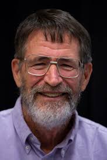
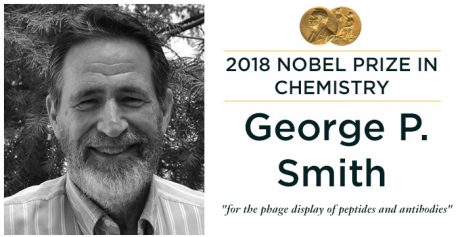

Estudió biología en Haverford College, fue profesor de secundaria y técnico de laboratorio durante un año y obtuvo su Ph.D. en bacteriología e inmunología de la Universidad de Harvard. Fue postdoctorado en la Universidad de Wisconsin (con el futuro premio Nobel Oliver Smithies) antes de unirse a la facultad de Missouri-Columbia en 1975. Pasó el año académico 1983-1984 en la Universidad de Duke con Robert Webster.
Premios y honores
1. Premio Promega de Investigación en Biotecnología 20074
2. 2001 elegido miembro - AAAS5
3. 2000 profesor de la Universidad de Missouri6
4. Premio Nobel de Química 2018 junto con Greg Winter y Frances Arnold7
Nobel de Química: es para Frances Arnold, George Smith y Gregory Winter
La Real Academia Sueca de la Ciencia anunció a los ganadores del Premio Nobel de Química. Así como ocurrió con el Nobel de Física, anunciado un día antes, este reconocimiento será otorgado a dos equipos de investigadores. La estadounidense Frances H. Arnold recibirá el Nobel por su trabajo sobre la evolución dirigida de enzimas, mientras que al equipo conformado por el estadounidense George P. Smith y el británico Sir Gregory P. Winter le entregarán el premio por el desarrollo de péptidos y anticuerpos a partir de virus.